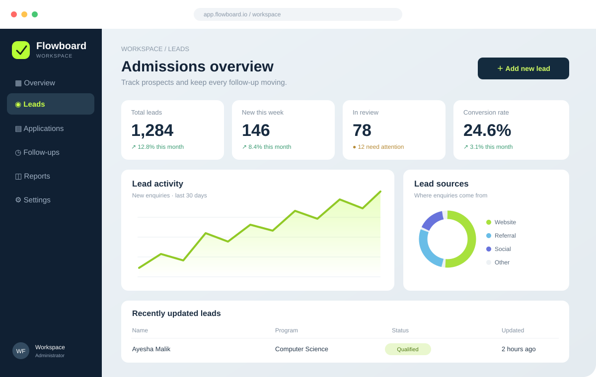

01 / INTELLIGENCE
AI solutions & chatbots
Give customers faster answers and help your team find information with AI assistants designed around your business knowledge.
Explore AI solutions ↗We build AI chatbots, workflow automations, websites and custom web apps that help your business work better—not just look more digital.
From first idea to launch.
Clear process. Practical technology. Human-first design.

Need to attract customers, reduce repetitive tasks, answer questions faster, or build a better tool for your team? Let’s turn that need into a practical digital solution.
Give customers faster answers and help your team find information with AI assistants designed around your business knowledge.
Explore AI solutions ↗Connect tools, move data, and automate repeated tasks so your team can spend less time on manual work.
Automate a workflow ↗Build trust online with modern, responsive websites that explain your offer and make it easy for customers to take action.
Create a website ↗Purpose-built web applications for managing enquiries, internal operations, customer accounts, and business processes.
Build an application ↗Make your information easier to understand with reporting, analytics dashboards, and visual insights for better decisions.
Make sense of your data ↗Have a unique idea or a problem that doesn't fit a standard package? We can scope a solution around your needs.
Tell us about it ↗Choose what you want to improve. Answer three quick questions and get a practical starting recommendation tailored to your business.
Choose the closest match. There are no wrong answers.
We’ll use this to prioritize the first part of your solution.
We’ll tailor the suggested starting point to what you use today.
Choose the option closest to your current setup.
This helps us focus the dashboard and reporting plan on real decisions.
We will recommend a sensible starting point rather than adding tools you may not need.
Explore sample interfaces across websites, web apps, AI assistants, and analytics. Open a project to browse four screens without logging into a demo.
Demo concepts, not client claims. These sample projects show how your portfolio can look. Replace the screenshots and descriptions with work you’re able to share—visitors can explore images without needing app access.
Good digital experiences don’t live in isolation. We can help plan the journey from a customer’s first question to the tools and actions that keep your business moving.
Plan your solution ↗You don’t need every detail figured out before starting. We’ll break the work into understandable steps and keep the focus on the outcome you need.
Talk through your idea ↗We learn about your users, your process, and what you want to improve.
We outline features, experience, and scope before investing in the build.
We build, test, and refine the experience with usability and reliability in mind.
We help you understand the solution and the next steps for improving it.
WireFizz brings design, software, AI, and data together to solve practical business challenges. Our goal isn’t to add technology for the sake of it—it’s to make the work clearer, faster, and more useful for the people who rely on it.
Let’s talk about what you need ↗Start with the problem, not the trend or tool.
Make products straightforward for real people to use.
Create a useful foundation that can evolve as you do.
Not sure which service fits your goal? Start here, or tell us about it directly.
Ask us anything ↗We can help with websites, web applications, AI chatbots and assistants, business process automation, API integrations, and data dashboards. We’ll discuss the goal and scope before recommending an approach.
Yes. Chatbot options can range from guided FAQs to AI assistants that use approved business information. The right approach depends on your content, user needs, and integrations.
No. A rough idea or a process that needs improvement is enough to start a conversation. We can help clarify the requirements and identify a sensible first step.
Yes. Each portfolio project can include a gallery of screenshots, so visitors can explore the interface without creating an account or signing in to the live application.
Tell us what you want to improve, automate, or create. We’ll use the details to understand your needs and start a practical conversation.